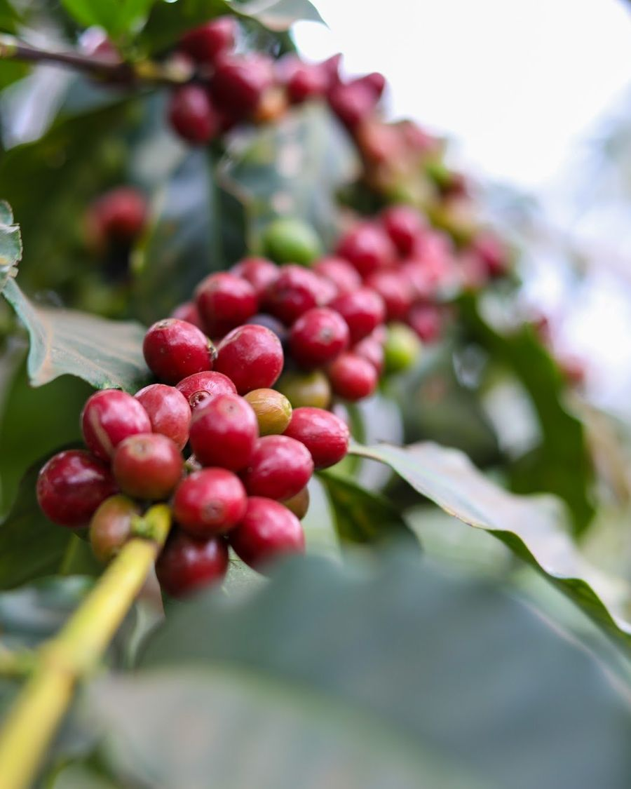
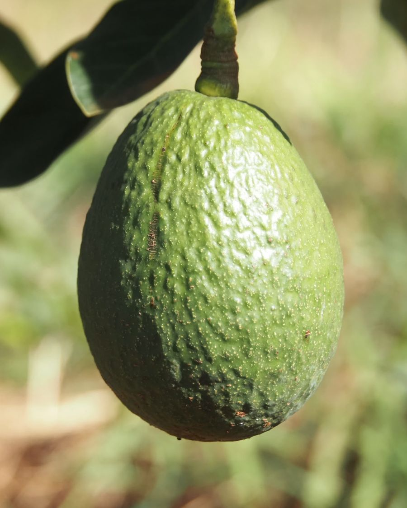
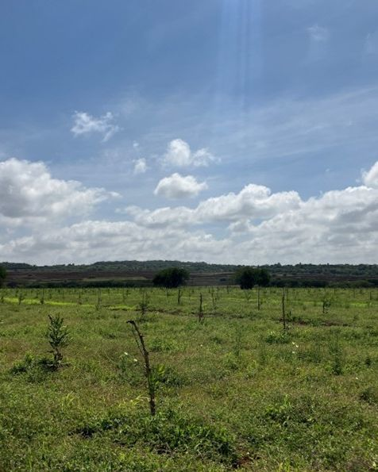
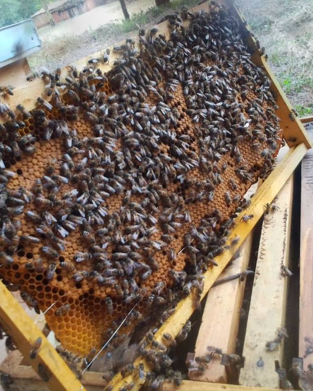
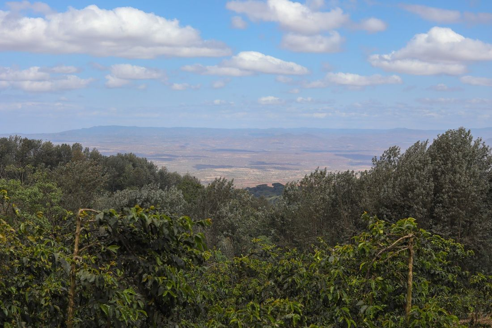
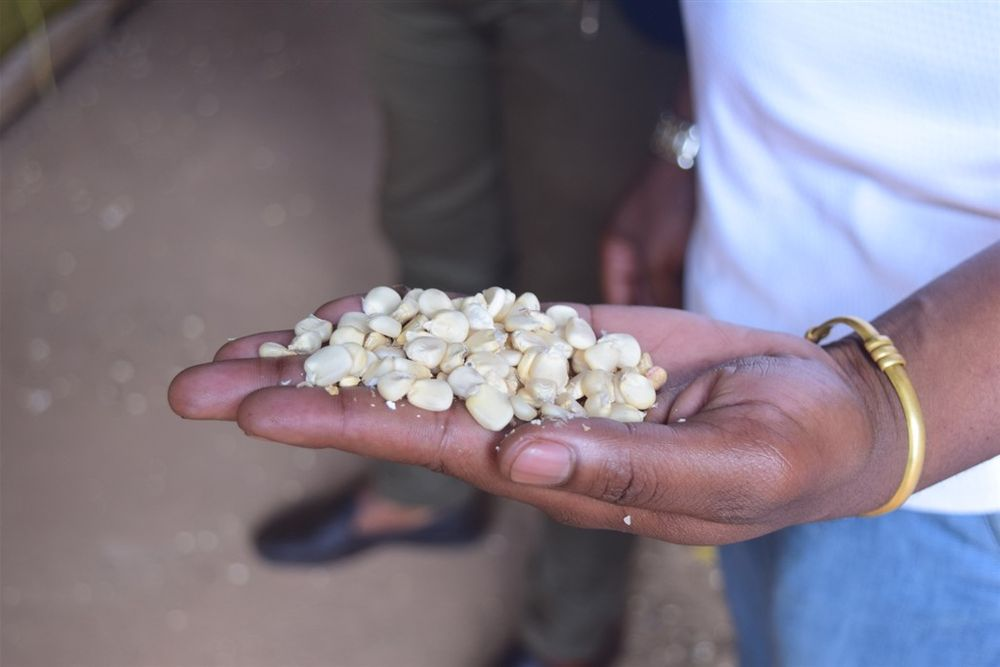
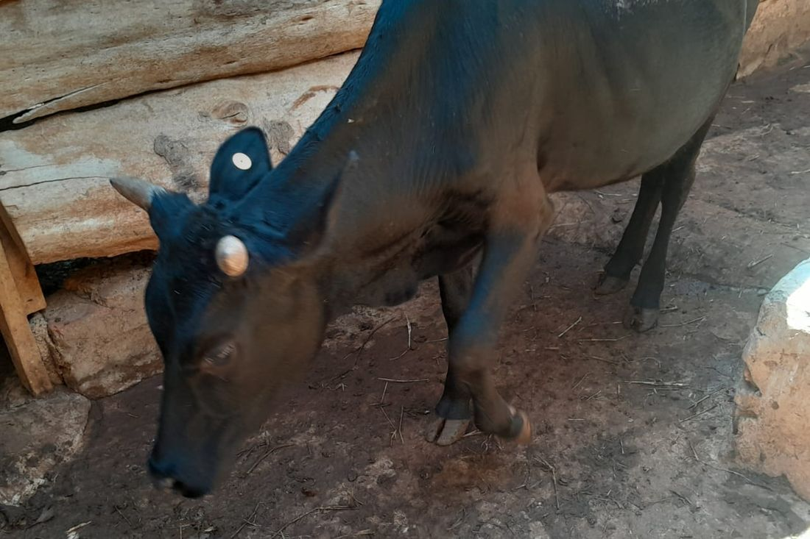
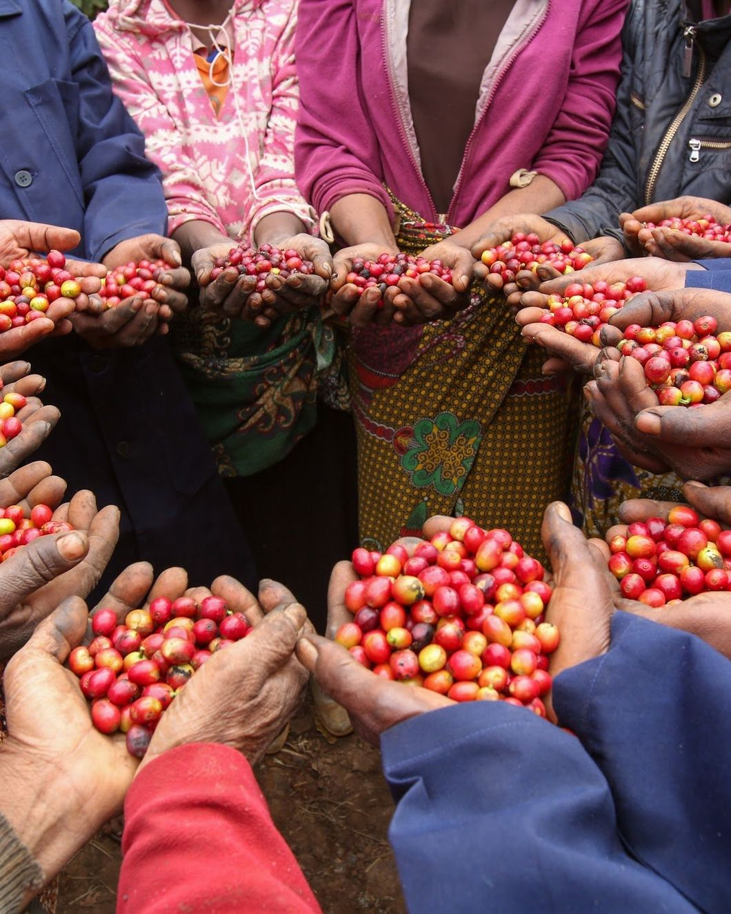

Rainforest Alliance

On the edge of Ngorongoro, TanzaniaPembezoni mwa Ngorongoro, Tanzaniaタンザニア、ンゴロンゴロのほとりで
Coffee rows looking out over the plainSafu za kahawa zikitazama uwanda平原を見下ろすコーヒーの列 Ripening cherries, with the coffee rows behindMatunda yanayoiva, na safu za kahawa nyuma yake熟していくコーヒーの実と、その奥の畑 Mt. Oldeani, seen from the farmMlima Oldeani, ukitazamwa kutoka shambani農園から望むオルデアニ山 Coffee on the slope, with a reservoir belowKahawa kwenye mteremko, na bwawa la maji chini斜面のコーヒー畑と、その下の貯水池 Drying beds, seen from the airVitanda vya kukaushia, vikionekana kutoka angani上空から見た乾燥棚 The dam, completed in 2025Bwawa, lililokamilika mwaka 20252025年に完成したダム The first sunrise of 2025 on the farmMacheo ya kwanza ya mwaka 2025 shambani農園で迎えた2025年最初の朝日 A reservoir on the farmBwawa la maji shambani農園の貯水池
Draft translationTafsiri ya rasimu翻訳は下書き
01Our CompanyKampuni Yetu会社概要
In 2023, TANJA took over three coffee estates in the highlands of northern Tanzania. Coffee has been grown on these slopes since the 1920s.Mwaka 2023, TANJA ilichukua mashamba matatu ya kahawa katika nyanda za juu za kaskazini mwa Tanzania. Kahawa imelimwa kwenye miteremko hii tangu miaka ya 1920.TANJAは2023年、タンザニア北部の高地にある3つのコーヒー農園を引き継ぎました。この斜面では1920年代からコーヒーが育てられてきました。
More than 500 people work on the farm today. With agriculture at the core, TANJA runs the Smart Village Project together with the surrounding community, working towards a carbon-neutral farm and lasting wellbeing for the people who live around it.Leo, zaidi ya watu 500 wanafanya kazi shambani. Kilimo kikiwa ndicho kiini, TANJA inaendesha Mradi wa Smart Village pamoja na jamii inayozunguka, kwa lengo la kuwa na shamba lisilochangia ongezeko la kaboni na ustawi wa kudumu kwa watu wanaoishi jirani.いま農園で働く人は500人を超えます。農業を中核に据えたSmart Village Projectは、地域とともに進める取り組みです。カーボンニュートラルな農園と、周りに暮らす人々の持続的なウェルビーイングを目指しています。

On the southeast slope of Mt. Oldeani, beside the Ngorongoro Conservation AreaKwenye mteremko wa kusini-mashariki wa Mlima Oldeani, kando ya Hifadhi ya Ngorongoroオルデアニ山の南東斜面、ンゴロンゴロ保全地域のとなり
1,580–1,840 m
German for “mountain of peace”. The highest of the three, where wild elephants often pass through.Kwa Kijerumani maana yake ni “mlima wa amani”. Ndilo shamba lililo juu zaidi kati ya matatu, ambapo tembo pori hupita mara kwa mara.ドイツ語で「平和の山」という意味の名をもつ、3つのうち最も標高の高い農園です。野生のゾウがよく通ります。
1,400–1,700 m
The largest estate and the centre of daily work, with the wet mill, drying beds and the farm office.Shamba kubwa zaidi na kitovu cha kazi za kila siku, lenye kiwanda cha kuchakata kahawa kwa maji, vitanda vya kukaushia na ofisi ya shamba.最も広く、日々の作業の中心となる農園。ウェットミル、乾燥棚、農園事務所があります。
1,370–1,400 m
A quiet estate under shade trees, where coffee cherries ripen slowly.Shamba tulivu chini ya miti ya kivuli, ambapo matunda ya kahawa huiva taratibu.シェードツリーに囲まれた静かな農園で、コーヒーの実はゆっくりと熟していきます。
Draft translationTafsiri ya rasimu翻訳は下書き
02Farm · Sustainability · CafeShamba · Uendelevu · Mkahawa農園・サステナビリティ・カフェ
Our work spans the farm, sustainability projects with our neighbours, and a café.Kazi zetu zinajumuisha shamba, miradi ya uendelevu pamoja na majirani zetu, na mkahawa.農園での生産、地域とともに進めるサステナビリティ・プロジェクト、そしてカフェ。
Our farms have a history spanning more than a century and lie on the edge of Ngorongoro. Drawing on this history and rich natural surroundings, we grow coffee, avocados and macadamias, and keep bees.Mashamba yetu yana historia ya zaidi ya karne moja na yako pembezoni mwa Ngorongoro. Tukitegemea historia hii na mazingira haya tajiri ya asili, tunalima kahawa, parachichi na makadamia, na tunafuga nyuki.私たちの農園はンゴロンゴロのほとりに広がり、100年を超える歴史をもちます。受け継いだ歴史と豊かな自然を生かし、コーヒー、アボカド、マカダミアを育て、ミツバチを飼っています。
Our coffee farms hold Rainforest Alliance certification, and our avocado farms hold GLOBALG.A.P. certification.Mashamba yetu ya kahawa yana cheti cha Rainforest Alliance, na mashamba yetu ya parachichi yana cheti cha GLOBALG.A.P.認証は、コーヒー農園がレインフォレスト・アライアンス、アボカド農園がGLOBALG.A.P.です。
We aim to care for the environment, support the wellbeing of the people who work here, and bring joy to those who enjoy the harvests of this rich land.Tunalenga kutunza mazingira, kusaidia ustawi wa watu wanaofanya kazi hapa, na kuleta furaha kwa wale wanaofurahia mavuno ya ardhi hii tajiri.目指すのは、環境を守り、ここで働く人々のウェルビーイングを支え、この豊かな土地の実りを味わう人々に喜びを届けることです。

Rainforest Alliance

GLOBALG.A.P.


Projects that reach from the farm into the community.Miradi inayotoka shambani hadi kwenye jamii.農園から地域へ広がるプロジェクト。

A project to bring improved cookstoves to households around the farm. They need far less firewood than a traditional three-stone fire: less smoke in the kitchen, less CO₂, and less of the daily work of collecting wood. The project aims to obtain carbon credits.Mradi wa kusambaza majiko banifu kwa kaya zinazozunguka shamba. Yanatumia kuni kidogo sana kuliko jiko la mafiga matatu: moshi mdogo jikoni, hewa ukaa (CO₂) kidogo, na kazi ndogo ya kila siku ya kutafuta kuni. Mradi unalenga kupata hati za kaboni.農園の周りの家庭に、改良型のかまどを広めるプロジェクトです。昔ながらの三石かまどに比べて薪がずっと少なくて済み、台所の煙もCO₂も減り、毎日の薪集めの負担も軽くなります。カーボンクレジットの取得も目指しています。

Since 2024, TANJA and a partner company have provided lunch for every student at the two secondary schools near the farm. In public secondary schools here, school meals depend on what parents can pay. On the farm, workers are now served a meal too.Tangu mwaka 2024, TANJA pamoja na kampuni mshirika zimekuwa zikitoa chakula cha mchana kwa wanafunzi wote wa shule mbili za sekondari zilizo jirani na shamba. Katika shule za sekondari za umma hapa, chakula cha shule hutegemea uwezo wa wazazi kulipa. Shambani, wafanyakazi nao sasa hupewa mlo.対象は農園の近くにある2つの中等学校で、2024年から協力企業とともに全校生徒に給食を届けてきました。この地域の公立中等学校では、給食を保護者の負担に頼っているのが現状です。農園で働く人たちにも、昼食を出し始めました。

TANJA also keeps cattle. Their manure goes back to the avocado and coffee fields as compost; meat, milk and biogas are at the planning stage.TANJA pia inafuga ng’ombe. Samadi yao hurudishwa kwenye mashamba ya parachichi na kahawa kama mbolea; nyama, maziwa na biogesi bado ziko katika hatua ya mipango.TANJAでは牛も飼育しています。牛ふんは堆肥としてアボカドやコーヒーの畑に戻り、肉や牛乳、バイオガスへの活用は計画段階です。
Details will be shared here.Maelezo yatatolewa hapa.詳細は、決まりしだいこちらでお知らせします。
Draft translationTafsiri ya rasimu翻訳は下書き

03Working at TANJAKufanya kazi TANJATANJAで働く
More than 500 people work at TANJA: in the fields and the wet mill, in the workshop, on community projects and in the office.Zaidi ya watu 500 wanafanya kazi TANJA: mashambani na kwenye kiwanda cha kahawa, karakana, miradi ya jamii na ofisini.TANJAで働く人は500人を超えます。職場は畑やウェットミル、整備工場、地域のプロジェクト、事務所とさまざまです。
Since taking over the farm, TANJA has signed written employment contracts with its workers and helps them join social security. In January 2025 and 2026, the teams met for an orientation on how the company works.Tangu ilipochukua shamba, TANJA imesaini mikataba ya ajira ya maandishi na wafanyakazi wake na inawasaidia kujiunga na hifadhi ya jamii. Januari 2025 na 2026, timu zilikutana kwa mafunzo elekezi kuhusu jinsi kampuni inavyofanya kazi.農園を引き継いでから、ワーカー一人ひとりと書面で雇用契約を結び、社会保障への加入も支援してきました。2025年と2026年の1月には各チームが集まり、会社の制度や決まりを確かめるオリエンテーションを開きました。
Open positions will be announced on this page.Nafasi za kazi zitatangazwa kwenye ukurasa huu.募集の開始は、このページでお知らせする予定です。
Draft translationTafsiri ya rasimu翻訳は下書き
04Get in touchWasilianaご連絡
Questions about the farm, our projects or working together: reach us here.Maswali kuhusu shamba, miradi yetu au kushirikiana nasi: wasiliana nasi hapa.農園やプロジェクトについてのご質問、協業のご相談はこちらへ。
Placeholder details. Official contact information to be confirmed.Taarifa hizi ni za mfano. Mawasiliano rasmi bado yanathibitishwa.表示は仮の値です。正式な連絡先は確認中です。